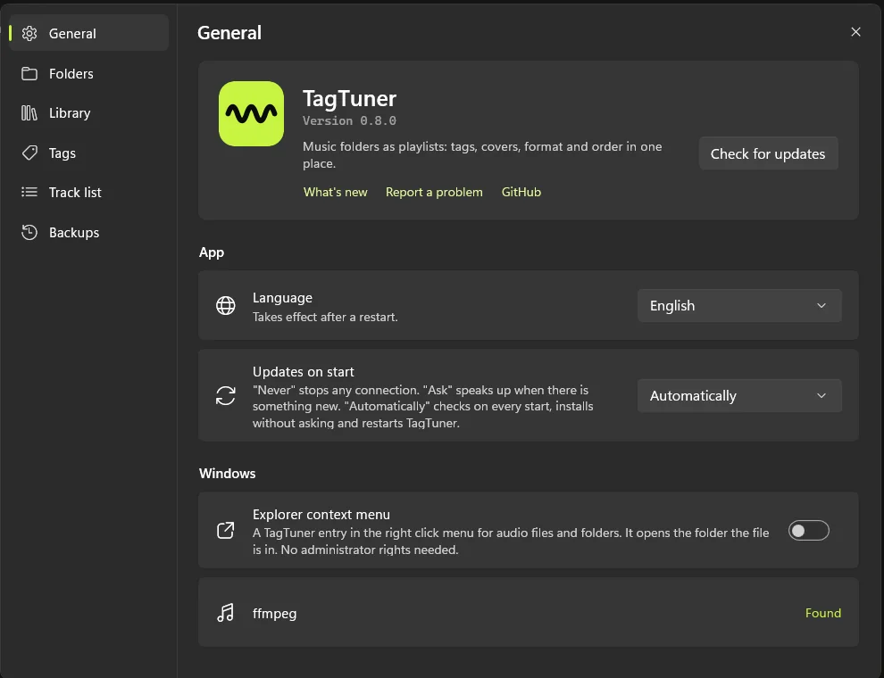
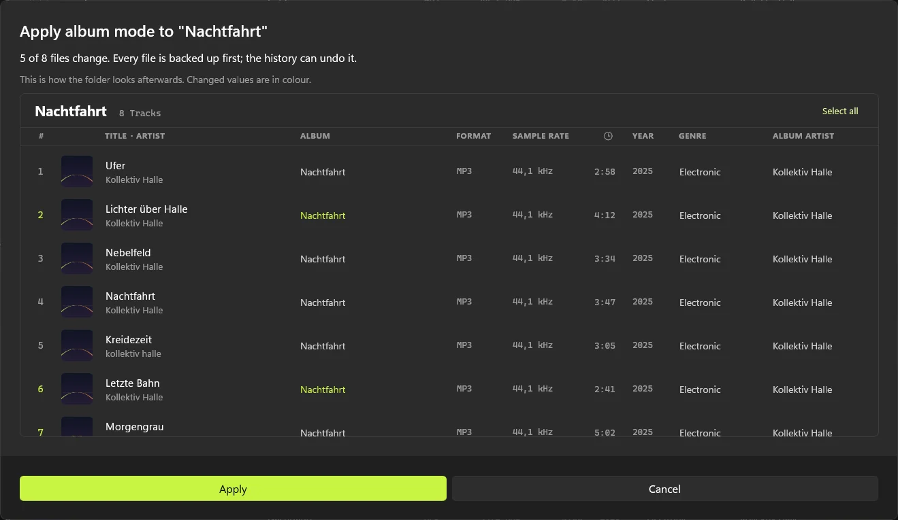

Settings that explain themselves
Every option says what it does, right next to the switch.

TagTuner opens a music folder like a playlist. Fix tags, covers, track order and formats in one window.

Turn on album mode and a folder behaves like one release. Before anything is written, you see the result, with every change in colour.

Subfolders open right below the list, several at once. Drag songs between them like between two windows.

Every option says what it does, right next to the switch.

One cover for the whole folder in a single step. Square JPEGs stay byte for byte.


Drop a FLAC into an MP3 album and it is converted to match.
TagTuner keeps a copy before every write. Undo with Ctrl+Z, or restore any file later and see what changed since.

Thirteen of them.
Free and open source, for Windows 10 and 11.